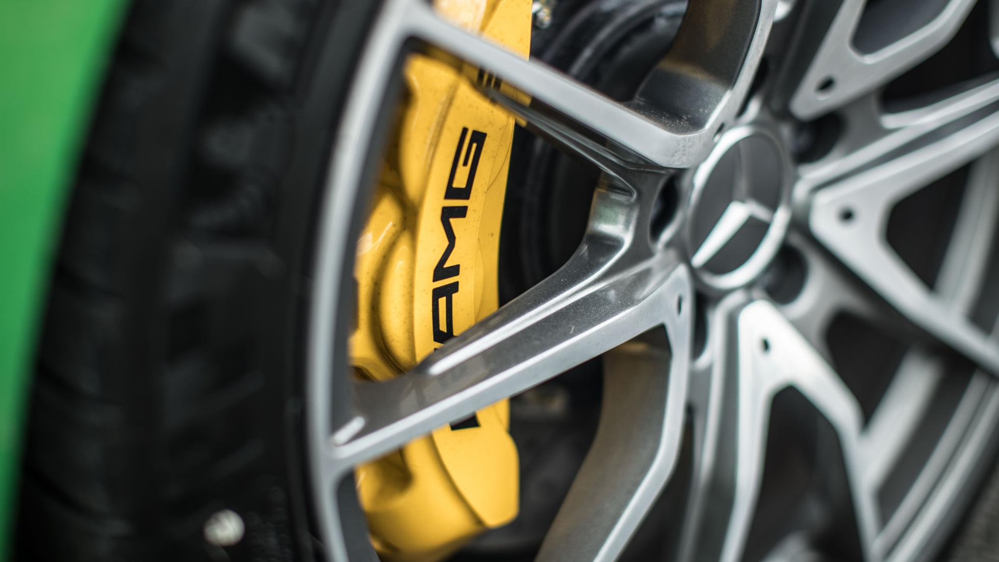
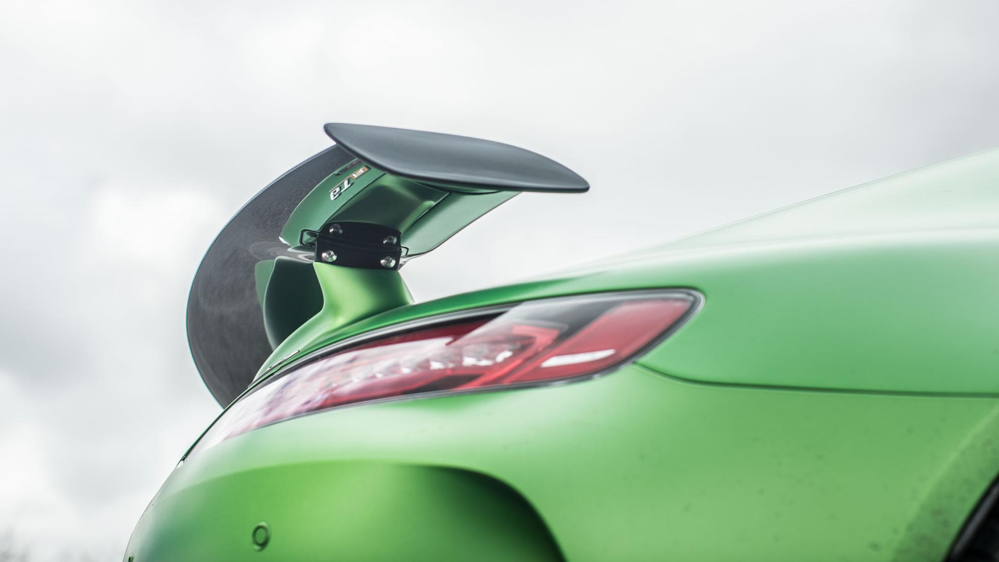
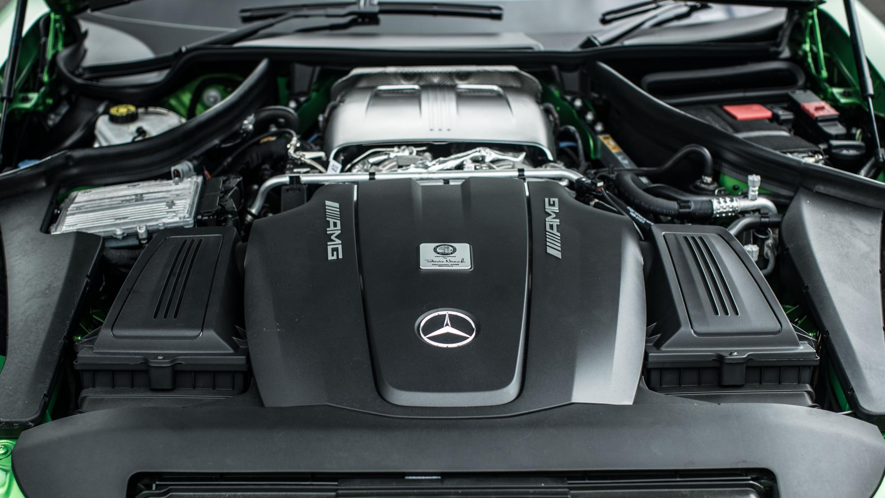
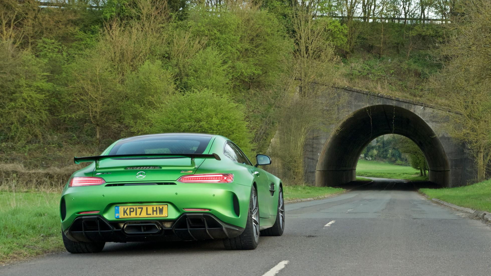
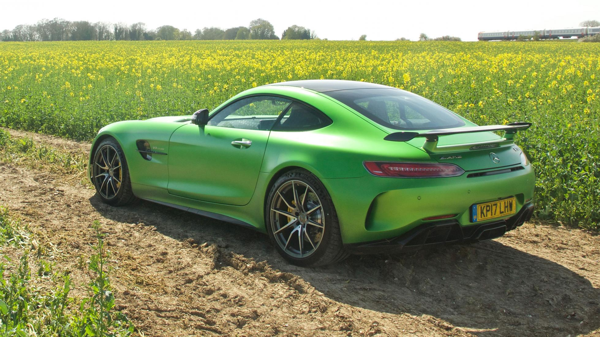

Time to review the Mercedes-AMG GT R again?
Not that we need an excuse, but yes, after a stellar debut in Portugal we’ve got the 577bhp, £142,000 GT R all to ourselves in Britain, which is where the standard GT S largely came unstuck.
Quite literally. Too wide, impossible to see out of, uncomfortably jarring, and snatchy when the throttle was tickled. Less an everyday Porsche 911 rival, more a Dodge Hellcat with the steering wheel on the correct side.

And driving a faster one is going to help matters, is it?
On paper, it doesn’t look good. The R has more poke – the last thing the GT needed. Its twin-turbo 4.0-litre V8 has grown by 74bhp and 37lb ft, thanks to new turbos, increased boost pressure and F1-spec low-friction internals. It’s pressed harder into the road by active underbody aero and a monster diffuser/wing combo that conjures 155kg more downforce than the regular GT S. You’ll be going a lot quicker then, but meanly, ceramic brakes are a £5,995 option. This car doesn’t have them.
So let’s have it then. What’s the hashtag Beast-of-Green-Hell like in your green and pleasant land?
Confidence-inspiring. Fun. Something approaching revelatory, in fact.
Explain.
Ignore the numbers getting bigger. It’s the not-so quantifiable stuff that’s sorted the GT R. Stuff like a rear-wheel steer system to rationalise its hyper-fast steering. Low-speed manoeuvrability is transformed (I know, it’s not a shopping trolley, but in a vehicle with the visibility of a nuclear submarine it’s handy to get it about-faced before sunset). In fact, you feel how hyper-alert everything is and think ‘oh dear, here we go again’.
Worry not. The car’s nose is simply more trustworthy into a sweeping bend or tricky direction chance, because the rear axle isn’t being caught unawares by ready-or-not-here-comes-the-steering. There’s still nothing like the organic feel of a Porsche GT3 or a McLaren, but it’s night-and-day better than the wayward GT S.
It’s so much more trustworthy, in fact, that the R feels easier to place, to thread through villages and down narrow lanes than the GT, which is a whole 57mm narrower. And boy, does this machine look good on the road. But we’ll come back to that…

What else is better?
The ride. I’ve not driven a standard GT, which is allegedly okay, but the GT S, with its dynamic engines mounts and adaptive suspension, is severely rigid. Even dialled back into Comfort mode, it mocks its ‘Gran Turismo’ badge. It ought to stand for Greatly Tiresome.
The R reverses that – you can happily mooch about in Sport on the road without the rear axle you’re sitting atop attempting to take flight. Sport Plus is overkill for the street, but that’s okay, because there’s a broader repertoire of usability overall. A less hop-skippety chassis also blesses the R with greater reserves of traction.
Mind you, it is running a serious tyre: a 325mm Michelin Pilot Cup 2 that actually dealt with crappy British surfaces remarkably well. At least until Wales threw its patented cocktail of rain and slick cow muck at the car, and the GT R promptly demonstrated that when 516lb ft is nagging two wheels smeared in liqui-dung, no traction control or aero-wizardy will keep it neat and tidy. When it goes, the R still goes broadside rather briskly. If it all gets a bit hectic, and it will, the standard steel brakes have great feel and power, for road work at least.
Did you turn everything off and experiment with that traction control strength knob?
No, partly because the R was more than entertaining enough with its systems left online, and also because – spoiler alert – I’m not The Stig.

Am I just paying £31,570 extra for chassis and aero mods?
No, you’re graduating to (neck on the line time), the best turbocharged engine in the world right now. There’s power everywhere, right through the rev range, and also a sense of crescendo: of snowballing fury that’s worth wringing the V8 to 7,000rpm to savour.
Turbo lag? Not for me. Response is instant, the power urgent. And driving on UK roads, treading the tightrope of winding B-roads, and strict, ever-changing speed limits, you appreciate how much shorter the R’s gear ratios are. You chomp through the seven ratios more hungrily, and on the way back down, the dual-clutch unit is much more alert to a cluster of left-hand paddle flicks without getting flustered and forgetting its lines.
How’s the noise? Not too contrived, I hope?
Not a bit of it. It’s authentic and interesting. Proper blood’n’thunder stuff. Vibrations reverberate through the small of your back as the R rocks on its springs – it’s a malevolent rumble, part motorsport, part Mopar muscle. And the exhaust’s overrun is pure Napoleonic battlefield.
Oh, I need to tell you about the exhausts. Up until I drank in the car’s details in the flesh, I thought it just had one artillery piece exiting centrally through the diffuser, but peer closer and you’ll spot two smaller cannons lurking under those red reflectors, each surrounded by blackened carbon heat shields. It’s a delightful, devilish detail. So are the holepunched side sickles. And the uncovered front radiators, exposed to the airflow. And the squat stance. The R looks bloody sensational.

So I’m guessing this attracts a certain amount of attention…
Yeah, warping around in a giant apple sours bottle with a bigger kick tends to turn a few heads. It’s mostly positive attention, though, even in ever-cynical London. This isn’t just down to AMG Green Hell Magno matte paint, so lurid you half-expect to lick the bonnet and discover it’s sour lime flavour.
It’s the cartoonish proportions of the thing. It’s less serious than a wingshod Porsche GT3, whose driver you might assume is the sort of individual who’d turn up to their seven-year old’s go-karting birthday party wearing racing boots. And neither is the GT R as lottery win-tastic as a mid-engined R8 or McLaren. It’s pure caricature. No-one’s going to spot that 15-louvre mouth and think “ah yes, he’s referencing the 1952 winner of the Panamericana Mexico race.” They’ll resolve you’re a keen Silence of the Lambs fan.
Finally found its mark then, the AMG GT?
Not a bit of it. It’s authentic and interesting. Proper blood’n’thunder stuff. Vibrations reverberate through the small of your back as the R rocks on its springs – it’s a malevolent rumble, part motorsport, part Mopar muscle. And the exhaust’s overrun is pure Napoleonic battlefield.
Oh, I need to tell you about the exhausts. Up until I drank in the car’s details in the flesh, I thought it just had one artillery piece exiting centrally through the diffuser, but peer closer and you’ll spot two smaller cannons lurking under those red reflectors, each surrounded by blackened carbon heat shields. It’s a delightful, devilish detail. So are the holepunched side sickles. And the uncovered front radiators, exposed to the airflow. And the squat stance. The R looks bloody sensational.

Share this page: